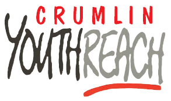

Left school early but still want to continue your education?
See if Crumlin Youthreach is right for you!
Crumlin Youthreach is available to all Learners aged between 16 and 20 and provides QQI accredited courses on a range of subjects, including;
- Woodworking
- Catering
- STEAM & 3D Printing
- Personal Development
- Workplace Safety
- Maths
- IT Skills
- Communications & Interculturalsim
- Art
- Health Related Fitness
Want to know if Crumlin Youthrach is right for you? get in touch here!